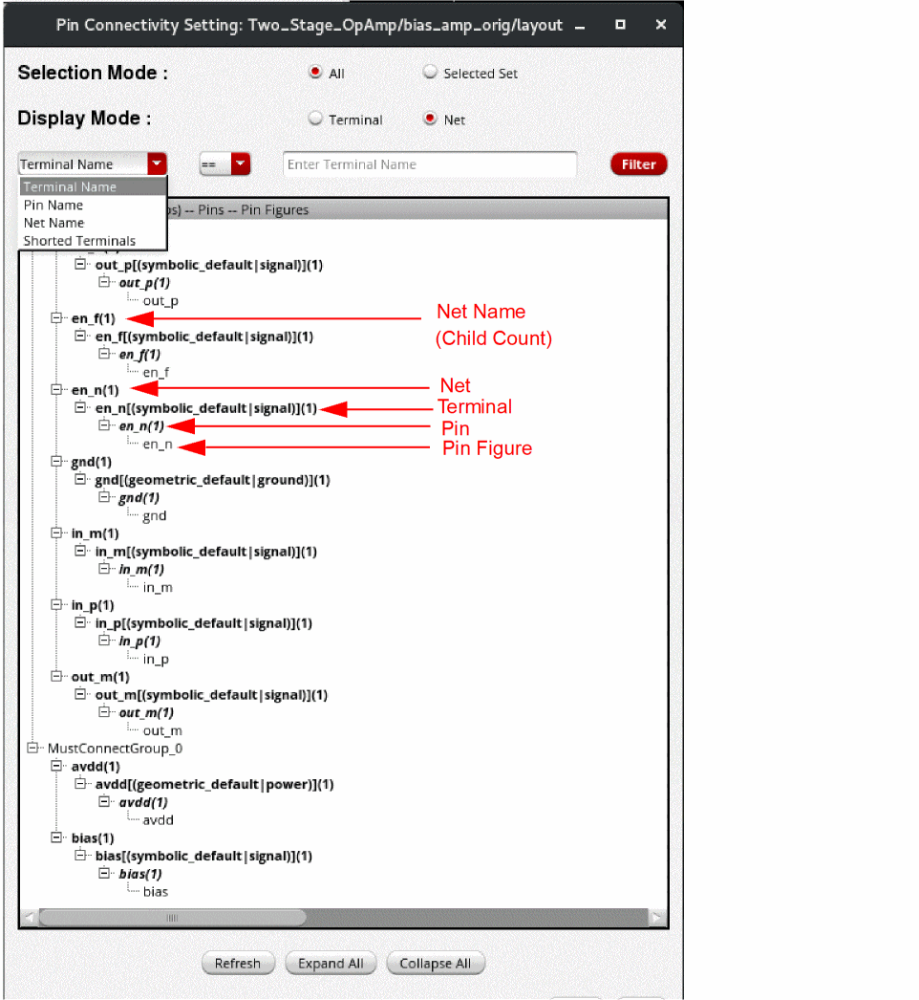
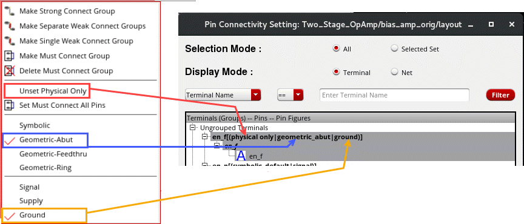

Setting a Pin Connectivity Model
To set a pin connectivity model:
-
Choose Connectivity – Pins – Pin Connectivity Setting.
The Pin Connectivity Setting form appears.
The Pin Connectivity Setting form lists all nets, terminals, pins, and pin figures in the current design in a tree structure.
- To show the physical configuration attribute, select the required terminal and choose Set Physical Only from the shortcut menu. To turn off this setting, select Unset Physical Only from the shortcut menu. By default, the setting is off.
- To show the route and pin connectivity method, choose one of these options from the shortcut menu - Symbolic, Geometric-Abut, Geometric-Feedthru or Geometric-Ring.
- To show the signal type, choose one of the following options from the shortcut menu - Signal, Supply, or Ground.
-
Use the following options to filter the terminals, pins, and pin figures that are listed in the tree structure:
- All and Selected: Controls the list of terminals, pins, and pin figures listed in the form.
- Terminal Name and Pin Name: Lists terminal names and pin names in the tree structure.
- Net Name: Lists net names in the tree structure. This option is visible only when Display Mode is set to Net.
- Shorted Terminals: Displays only those terminals that have been shorted.
- Expand All and Collapse All: Lets you traverse the tree structure.
- Right-click the individual terminals, pins, or pin figures for which you want to set a pin connectivity model.
- Choose the required pin connectivity model. The available options are:
- Click Refresh after making the required changes to pins in the layout canvas.
The Pin Connectivity Model form is synchronized with the layout canvas. Any selection or change you make in the form is reflected in the layout canvas and conversely. For example, if you select a pin in the form, it is automatically highlighted in the layout canvas.
Alternatively, you can use one of the following methods to set a pin connectivity model:
Related Topics
Shorting Terminals using the Pin Connectivity Setting Form
Unshorting Terminals in Pin Connectivity Form
Return to top